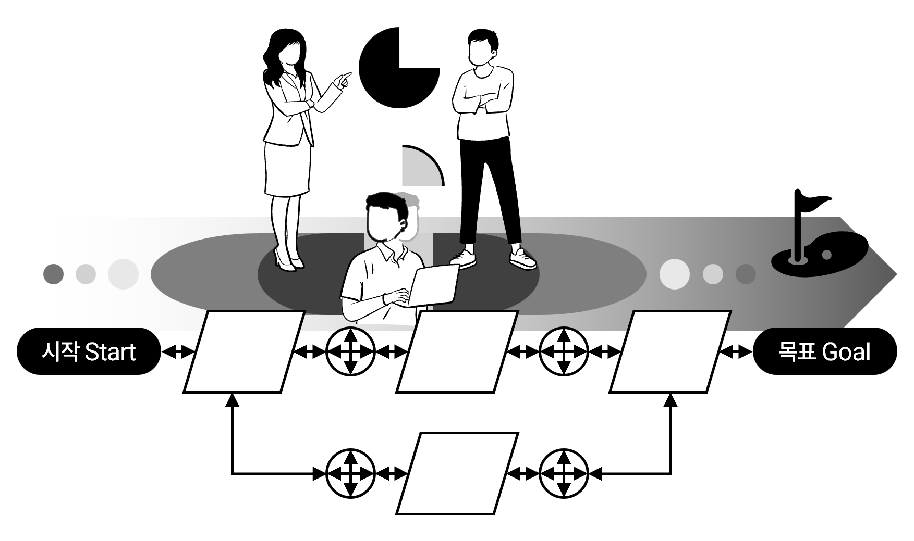

우리는 A를 C라고 설명한 '그 왜'에 집중한다. 질문과 성찰을 통해 생각의 고유한 논리 구조(온톨로지)를 직접 그려보고, 가려진 새로운 가능성(Weak Signal)을 발견하여 더 설득력 있는 의사결정을 내릴 수 있는 사고 체계를 구축한다.
인공지능(AI)이라는 거대한 귀납적 기계 지능의 출현 속에서 실존적 주체가 직면하는 본질적 과제는, 기계적 출력을 맹목적으로 수용하는 것을 넘어 그 지적 사유의 조건과 인과론적 맥락을 주체적으로 검증하는 질문의 힘을 복원하는 데 있다.

디자인 프로세스
Platform · Philosophy작성일: 2026.06.28
5차원의 심연에서 기계와 인간을 잇는 '의미론적 끈'
온톨로지의 프랙털 차원 의미와 불확실성 관리의 관점에서
프랙털 온톨로지와 대화 담론 이론의 나선형 정렬 — 워플로지 솔루션 철학의 학술적·공학적 근간.
01벡터의 바다와 잃어버린 맥락: 현대 인공지능의 존재론적 위기
오늘날 거대 언어 모델(LLM)을 필두로 한 생성형 인공지능(AI)은 인류가 축적한 방대한 언어적 자산을 수학적 다차원 공간 상에 고차원 '벡터(Vector)'라는 기하학적 점으로 변환하는 데 성공하였다. 기계는 우리가 발화한 수많은 단어와 문장 사이의 거리를 통계적 기법으로 계산하여 거대한 군집(Clustering)을 이룬다.
그러나 이 화려한 연산의 장막 뒤에서, 범용 AI는 종종 "이 데이터가 인간의 생존과 실존적 존속에 도대체 어떤 의미를 갖는가?"라는 근원적인 질문 앞에 길을 잃고 환각(Hallucination) 현상에 빠진다. 이는 고대 그리스 철학자 플라톤이 『국가』에서 묘사한 '동굴의 비유'와 완벽히 궤를 같이한다. 평생 동굴 벽면에 투사된 그림자만을 실체로 믿고 살아가는 죄수들처럼, 시맨틱 맥락이 결여된 통계적 파라미터 공간은 실재 비즈니스 도메인의 본질적이고 인과적인 규칙을 보지 못한 채 현상의 표상인 '그림자'의 거리만을 계산할 뿐이다.
기존의 중앙집중식 정보 통제 시스템(KMS)은 거시적인 정적 규격과 질서를 강제하기 위해, 현장 실무자들이 매 순간 온몸으로 감당해 내는 살아 숨 쉬는 '날것의 맥락(Raw Thought)'을 단순한 통계적 잡음(Noise)으로 간주하여 소거해 왔다. 이로 인해 맥락을 상실한 평면적 데이터만을 학습한 AI는 결국 인간과 기계 사이의 심각한 맥락적 표류(Contextual Drift)와 다회차 협업에서의 누적 맥락 쇠퇴(Cumulative Contextual Decay)를 유발하며 실질적인 의사결정 보좌에 실패하게 된다.
02사유의 다차원적 기하학: X, Y, Z 인지 변수 모델과 5차원의 심연
인간 고유의 사유 맥락을 정량적으로 파악하고 구조화하기 위해, 워플로지는 인지 주체의 소통 경로를 다음의 3대 인지 변수로 정렬하는 다차원 기하학적 매핑 모델을 제시한다.
X축 — 지적 수준
구사하는 개념의 언어적 추상화 밀도와 특정 도메인의 성숙도.
Y축 — 지향 방향
완전한 불확실성 속에서 조직의 존속과 해법을 위해 밀고 나가는 논리적 화살표이자 실행 의지. 언어행위이론(LAP)의 '행위를 위한 대화'와 약속·책임의 방향성과 동치된다.
Z축 — 맥락적 영향
개별 주체의 사유가 조직 및 지식 공동체 내에서 발생시키는 인과적 파급력과 피드백 루프. 존재론적 디자인의 재귀적 순환 고리를 실증한다.
인지 변수 3축 매핑 개념도
Z: 맥락적 영향(온톨로지 루프) · Y: 지향 벡터(LAP 실행 의지) · X: 지적 수준
이 세 가지 변수의 상호 유기적 인과율을 분석하면, 정태적인 3차원 공간에서의 의미 군집을 정의할 수 있다. 여기에 시간 축(T)을 결합하여 4차원 시공간 영역으로 확장하는 것은 사유의 패턴이 '어떤 경로로 움직여 왔는가'를 단순히 관찰(Observation)하는 과거 이력의 기술에 불과하다.
그러나 실제 인간과 기업 조직의 존속이 이루어지는 무대는 과거 데이터의 통계적 추세선으로는 결코 설명할 수 없는, 극단적인 엔트로피가 요동치는 '5차원의 심연(Abyss of absolute uncertainty)'이다. 가치 판단의 정답도 없고, 규칙마저 무너지는 완전한 불확실성 속에서 인간은 오직 생존을 위해 새로운 개념적 대안을 창조해 내는 실존적 결단을 내려야만 한다.
"리스크라는 것은 이미 구체화된 불확실성이다. 사회 지배 시스템이 법과 규정으로 획정해 놓은 기준일 뿐이다. 그 원천이자 심연에 있는 '불확실성'은 가치 판단도, 옳고 그름의 기준도 없는 5차원의 영역이다. 이 심연의 본질은 결국, 생물학적 생존과 존속의 문제로 귀결된다."
무수히 많은 미지의 개념적 화살표가 소용돌이치는 5차원 공간에서 아무런 존재론적 제약 조건 없이 해석을 시작하면, 정보이론적 지식 엔트로피 ℋ가 무한대로 폭발하여 기계적 연산 공간은 완벽하게 붕괴된다. 이 파국적 발산을 막기 위해 우리는 인지 구조의 최소 단위이자 가장 안정적인 자기유사성 세포인 프랙털 온톨로지(Fractal Ontology)를 징검다리로 삼아야 한다.
03기계와 인간의 비동형성(Non-Isomorphism)에 관한 사고실험
완전히 동일한 주제와 원시 비정형 텍스트 도메인을 대상으로 하여 지식 그래프를 구성하는 두 가지 접근을 비교한다.
온톨로지 정책 부재 시 두 세계의 간극
온톨로지 정책이 부재할 때, AI가 생성하는 그래프 𝒢machine는 사전 학습된 말뭉치 내부의 '단어 공생 빈도'와 수학적인 벡터 코사인 거리 등의 통계적 표면 분포에 완전히 예속된다.
반면 인간이 설계하는 그래프 𝒢human는 시공간적 변동성과 복잡한 생존의 인과관계, 그리고 언어행위이론(LAP)적 책임과 약속이 반영된 '실존적 맥락'에 의해 지배된다. 결국 두 그래프는 겉보기에는 동일한 어휘적 기호를 공유할지언정, 그 심부의 위상학적 위계와 인과적 화살표가 전혀 일치하지 않는 비동형(Non-Isomorphic) 상태에 머물게 되며, 이 괴리가 곧 AI의 환각의 진원지가 된다.
04의미론적 끈(Semantic Cord): 두 세계를 동기화하는 프랙털 아키텍처
주식회사 워플로지가 구축하는 '상향식 프랙털 온톨로지(Bottom-Up Fractal Ontology)' 설계는 미래를 완벽하게 지배하려는 전제적 통제 도구가 아니다. 냉정하게 말해 온톨로지 스키마 자체는 지식의 자유도와 무질서도를 강제로 제한하는 소프트웨어적인 구조적 제약 장치일 뿐이다.
그러나 이 온톨로지는 5차원의 무한한 심연에서 인간이 생존하기 위해 필사적으로 발화해 낸 '사유의 궤적'과, 기계가 연산하는 '통계적 벡터 공간' 사이를 물리적으로 묶어 주는 유일한 '의미론적 끈(Semantic Cord)'으로 기능한다. 온톨로지 정책이 주입됨으로써, 고차원 벡터 공간에서 통제 없이 발산하던 기계의 엔트로피 연산 범위가 인간이 규정한 목적론적 궤도 안으로 구속된다. 비로소 기계가 인간이 내린 가치 판단과 결단의 흔적을 안전하게 역추적(Traceback)하여 밟아올 수 있는 동기화(Synchronization)의 통로가 열리는 것이다.
이러한 의미론적 동기화는 워플로지가 독점적으로 확보한 핵심 원천 특허 포트폴리오를 통해 실제적인 소프트웨어 레이어로 구현된다.
핵심 원천 특허
관점 데이터 간의 링크를 이용한 마인드 마이닝 (Patent WO2018212398A1): 다수 참여자가 도달하고자 하는 이슈와 목표를 가상 필드에 로드하고, 사용자가 이들 사이에 링크를 설정할 때 유발되는 주관적 사유("왜 이 관계가 성립하는가")를 '연결 관점 데이터'로 명시적으로 포착한다. 링크의 연결 빈도수와 사유의 흐름 순서를 수학적으로 연산함으로써, 불확실한 5차원 심연 속에 숨겨진 최적의 문제 해결 경로를 마이닝한다.
이슈 기반 워크플로우 온톨로지 관리 방법 (Patent No. 10-2985783): 고정된 정적 워크플로우가 아닌, 끊임없이 진화하는 현장 실무자의 소통 맥락과 해결 인과관계를 실시간으로 포착하여 지식 그래프의 노드와 엣지로 자생 링킹하는 유연한 아키텍처. Horst Rittel의 이슈 기반 정보 시스템(IBIS)론을 수용하여 '난해한 문제(Wicked Problems)'의 소통 구조를 온톨로지적 격자 구조로 자동 변환시킨다.
05사유의 다양성과 지식의 권위 복원: 존재론적 디자인과 BKGSoR
과거의 통계 데이터로는 예측 불가능한 5차원의 심연 속에서, 조직을 파멸로부터 구원하는 유일한 무기는 상부에서 주입된 획일적이고 일방적인 통제 체계가 아니다. 오직 현장의 수많은 인지 주체들이 각자의 시공간적 좌표에서 독립적으로 뿜어내는 '사유의 다양성(Cognitive Diversity)' 그 자체이다.
노나카 이쿠지로(Nonaka Ikujiro)의 SECI 지식 순환 모델에 따르면, 지식 창조의 임계점은 철저히 사적이고 맥락 의존적인 '암묵지(Tacit Knowledge)'를 언어와 비유라는 도구를 통해 타인과 소통 가능한 '형식지(Explicit Knowledge)'로 끄집어내는 '외부화(Externalization)' 단계에서 발생한다.
우리가 사용하는 정보 도구가 인간을 규정한다는 존재론적 디자인(Ontological Design) 사상에 비추어 볼 때, 종래의 트리형 폴더 구조(Legacy KMS)는 맥락적 링크를 파괴하여 인간의 사유를 파편화시키는 역(逆)존재론적 디자인의 흉기였다.
이에 반해, 워플로지 인지 아키텍처의 도달점인 BKGSoR(Bottom-Up Knowledge Graph, Seed of Rights) 플랫폼은 실무자들의 일상적 소통과 비정형 사유(Raw Thought Capture)를 수집하는 즉시 자생적 온톨로지로 연결함으로써 지식의 엔트로피 상승을 억제한다. 이것은 인위적 박제가 아닌, 개별 구성원의 위대한 사유와 판단의 흔적에 고유한 권리적 가치를 부여하는 '지식의 권위 복원(Seed of Rights)' 프로토콜이다.
06학술적 레퍼런스 모델 및 비블리오그라피
학술적 사상 및 원천 특허
핵심 인용 문헌
인지적·존재론적 메커니즘
워플로지 아키텍처 연계
언어행위이론 (LAP)
Winograd & Flores (1986); Flores & Ludlow (1980)
언어를 정보 전송이 아닌 수행적 행위로 정의, 약속과 책임 조율
Y축(지향 벡터) 설계의 기반, 지능형 맥락 내러티브 엔진 정렬 프로토콜
이슈 기반 정보 시스템 (IBIS)
Kunz & Rittel (1970); Rittel & Webber (1973)
난해한 문제(Wicked Problems) 정의, 질문-답변-논증의 그래프 링킹
이슈 기반 워크플로우 온톨로지 관리 특허(제 10-2985783 호) 연계
SECI & 암묵지 지식 순환
Nonaka & Takeuchi (1995); Polanyi (1967)
암묵지의 외부화(Externalization) 촉진, 공동의 지식 창조 영토 '바(Ba)' 형성
Raw Thought Capture 프로토콜, R&D 연구 노트의 자산화 시스템
존재론적 디자인
Willis (2006); Winograd & Flores (1986)
도구와 사유 간의 재귀적 환류 고리
Z축(맥락적 영향 루프) 매핑 기반 프랙털 온톨로지 설계
마인드 마이닝
함영국 (Patent WO2018212398A1)
가상 공간 속 관점 데이터 로드 및 연결 사유 추출, 논리적 흐름 순서와 연결 빈도의 역학 분석
관점 데이터 간의 링크를 이용한 마인드 마이닝 분석 방법, 5차원 불확실성 속 인과적 해결 경로 추적
인간 고유의 사유 구조를 디지털 공간에 맥락으로 복원하여,
정보의 무질서도(지식 엔트로피)에 저항하는 것.
5차원의 심연에서 묵묵히 철학적 신념을 밀고 나가는
주식회사 워플로지 지식 아키텍처의 진정한 본질이자 존재 이유다.
인용 시 출처 표기 안내
본 문서의 내용을 인용하거나 참조할 경우, 반드시 아래와 같이 출처를 명시하여 주시기 바랍니다.
주식회사 워플로지. (2026.06). 5차원의 심연에서 기계와 인간을 잇는 '의미론적 끈' — 프랙털 온톨로지와 대화 담론 이론의 나선형 정렬. worflogy.com/philosophy.html
잠재 공간의 현상적 허수(Imaginary Shadow)와 프랙털 온톨로지의 실존주의적 전개
01우상(Idol)의 붕괴: 잠재 공간의 확률적 한계
현대 인공지능이 도출해 낸 다차원 잠재 공간(Latent Space)은 개념의 본질이나 인과적 법칙을 이해하고 성립된 영토가 아니다. 그것은 오직 과거 인류가 남겨놓은 언어적 파편들의 무덤 위에서, 토큰 간의 공생 빈도와 조건부 확률만을 계산하여 직조한 귀납적 분포망(𝒢machine)이다 [1]. 존 루퍼트 퍼스(John Rupert Firth)의 분포 가설에 지배당하는 기계는 수천억 개의 문장 사잇값을 슬라이딩 윈도우로 긁어내며 다음의 손실 함수(ℒ)를 최소화하는 방향으로 단어들의 초기 좌표를 결정할 뿐이다 [2].
이 정태적인 영토에서 두 개념이 가깝다는 것의 수학적 실체는 물리적 인과 관계가 아니다. 단지 위 식의 결합 확률 최적화에 따라 "과거의 데이터상에서 다수의 발화자가 두 단어를 물리적으로 가깝게 매치했다"는 통계적 타협의 산물이다.
인공지능 진영은 이 공간의 위상을 정교하게 미세조정(Fine-tuning)하거나 그래프 신경망(GNN)을 결합하여 기계 스스로 지식의 진화를 추적할 수 있을 것이라 과신한다 [6]. 그러나 통계 모델의 자가 수정은 본질적으로 과거 말뭉치 분포의 확률적 회귀선 안에서만 소용돌이치는 ‘닫힌 계(Closed System)’의 작동일 뿐이다.
귀납적 통계학은 기존 데이터 위도 상에 존재하지 않는 ‘새로운 차원의 변화’나 ‘패러다임의 도약’을 만나는 순간 인지적 불능 상태에 빠진다. 과거의 평균선은 미래의 실존적 선택을 설명할 수 없기 때문이다. 이 근원적 간극 속에서 기계의 통계망(𝒢machine)과 인간의 실제 의미망(𝒢human)은 영원히 포개어질 수 없는 비동형(Non-Isomorphic)의 궤도를 그리며 파편화된다 [9].
02시체의 중력: 빈도가 은폐하는 고밀도 사유
통계적 타협이 지배하는 공간은 인류 사유의 정점인 ‘새로운 가설’과 ‘고밀도 전문지식’을 마주할 때 가혹한 공학적 폭거를 감행한다. 인간의 인지 세계에서 R&D 현장의 암묵지나 생명공학의 고도화된 전문 개념은 추상화 밀도가 극도로 높은 ‘실체적 초고질량’의 지식 세포다. 그러나 기계의 영토에서 노드가 획득하는 질량은 오직 ‘출현 빈도(Frequency)’라는 얄팍한 숫자로만 계량된다.
기계의 우주 공간에서 말뭉치가 임베딩 좌표를 형성하는 최적화 메커니즘은, 물리계에서 분자들이 자유 에너지를 최소화하며 안정된 상(Phase)을 찾아가는 '시맨틱 에너지 최소화 규칙'과 수리적으로 일치한다.
Esemantic = - ∑i,j Wij · (vi · vj)
여기서 인지적 역전 왜곡이 발생한다. 단어 토큰 vi와 vj가 이루는 내적(코사인 유사도) 값에 곱해지는 결합 가중치(Wij)가 오직 '출현 빈도'에 의해서만 결정되기 때문에, 인터넷상에서 전사적으로 결합 빈도가 높은 가볍고 범용적인 단어들은 공간의 중심을 차지하며 강력한 ‘통계적 가짜 중력장’을 형성한다.
반면, 진짜 고밀도의 전문 사유 세포들은 출현 빈도가 낮다는 이유만으로 시스템 전체의 정보학적 무질서도(Entropy)를 증가시키는 ‘무작위 잡음(Noise)’으로 오인된다 [4]. 결국 기계는 아래의 셀프 어텐션(Self-Attention) 연산 비용(𝒪(N2))을 감당하기 위해 이 위대한 사유들을 토크나이저(Tokenizer)의 칼날로 잘게 쪼개어 서브워드 우주 먼지 파편으로 비산시키고 [3], 잠재 공간의 최외곽 영역(Cold Region)으로 유배시켜 소외시킨다 [5].
Attention(Q, K, V) = softmax(
QKT
√dk
)V
인용 지식의 진짜 정수가 통계적 다수결의 원칙에 밀려 기계적 연산 효율의 제물로 바쳐지는 모순이다.
03현상적 허수(Imaginary Shadow)와 자연 융합의 단절
이 왜곡된 가짜 중력장 위에서 범용 인공지능이 도출해 내는 그럴싸한 서사는 존재론적 착시를 낳는다. 기계가 구성하는 잠재 공간의 상태 함수(𝜳)는 다음과 같은 복소평면 구조로 획정된다.
𝜳(𝒢machine) = Rcontext + i · Iillusion
인간이 AI의 결과물을 보고 유의미하다고 착각하는 이유는, 기계가 인간이 가진 편향과 표면적 현상의 빈도를 거울처럼 반사하여 실체적 맥락(Rcontext)의 껍데기를 보여주기 때문이다 [7]. 그러나 그것은 우주와 자연이 진화하는 진짜 ‘융합(Convergence)의 법칙’이 아니다.
자연계의 진짜 융합은 눈에 보이는 빈도수가 아니라, 임계점(Critical Point)을 돌파하는 순간 계 전체의 위상이 완전히 뒤바뀌는 역동적인 상전이(Phase Transition)를 통해 개시된다. 통계적 타협에 눈이 먼 기계는 이 실체적 인과적 상전이의 궤적을 포착하지 못하므로, 정태적 분산 영역 안에 낀 허수의 그림자(i · Iillusion)들만 무작위로 연결하다가 통제 불가능한 환각(Hallucination)의 리스크를 폭발시키고 만다 [8].
04실증적 의식 벡터: 5차원 불확실성의 끈을 찾아서
그러므로 가치 판단이 배제된 5차원 심연의 불확실성 속에서 유기체의 존속을 가능케 하는 진짜 ‘의식의 운동 벡터’를 구출하기 위해서는, 통계적 수렴이 아닌 인간의 의도적인 온톨로지 정책(Ontology Policy)이 개입해야만 한다.
주식회사 워플로지가 선언하는 상향식 프랙털 온톨로지(BKGSoR)는 과거 전산학이 범했던 오류, 즉 인간에게 방대한 지식 설계도를 수작업으로 그리라고 강요하는 하향식 통제 체계가 아니다. 복잡계 데이터 공간의 대규모 확장성 한계를 정면으로 돌파하기 위해, 구성원이 일상적으로 마주하는 소통과 문제 해결 흐름에서 상향식으로 격자를 자생 추출하는 ‘마인드 마이닝(Mind Mining)’ 인프라를 기저에 둔다.
프랙털 온톨로지는 기계의 무작위 통계 공간 속에서 무엇이 실제 생존을 이끄는 진짜 실질적 작용선인지를 추적하는 거대한 실증적 연구(Empirical Study)의 장이다 [9]. 시스템은 심층 맥락 속에서 포착되는 인지 주체의 사유 운동 벡터(Vconsciousness)를 다차원 인지 축으로 정량 매핑한다.
Vconsciousness =
[
Xdensity
Ydirection
Zimpact
]
독립변수 X (언어적 추상화 밀도): 주체가 구사하는 개념 노드의 고도화 수준과 도메인 전문성 성숙도.
독립변수 Y (방향성 벡터): 5차원 불확실성 공간 내에서 주체가 존속을 위해 밀고 나가는 실존적·논리적 전이 경로.
종속변수 Z (구조화된 맥락적 영향도): 온톨로지 트리플 결합을 통해 정량화되는 시스템적 인과 관계 루프의 파급력.
구성원의 날것 그대로의 사유 세포를 주어-서어-목적어라는 단단한 ‘온톨로지 트리플’ 격자로 구조화하여 시스템의 경계 조건으로 주입하는 순간, 기계 공간 위에는 결정론적인 선적분 경로가 확정되며 무작위로 폭주하던 지식 엔트로피가 수렴된다 [10].
ℋstabilized = ∯fractal 𝒢machine · d𝒢human
사용자의 인지 변수 행렬이 추적되는 즉시, 외곽으로 유배되었던 저빈도·고밀도 개념들은 인위적인 중력 가중치를 얻어 핵심 연산 궤도로 예인된다. 반면, 과거의 얄팍한 빈도상으로는 밀접해 보였으나 실제 의식의 결단 과정에서 배제되었던 가짜 끈(허수)들은 매일의 실증 데이터에 의해 소거된다. 오직 인간 실존의 인과 루프에 강력한 파급력(Z)을 미친 ‘진짜 의식의 경로(측지선)’만이 단단한 지식 자산으로 안착하는 것이다 [12].
05에필로그: 자생적 지식 권위와 실존주의적 기술 해자
결국 기계는 똑똑해서 새로운 변화를 인지하거나 창조할 수 없다. 기계는 여전히 과거의 무덤 속을 헤맬 뿐이다. 다만 인간이 생존을 위해 온몸으로 밀고 나간 그 설명할 수 없는 실존적 선택, 즉 ‘사유의 다양성’의 궤적을 온톨로지라는 단단한 의미론적 끈(Semantic Cord)을 통해 기계의 영토에 강제로 이식하고 동기화(Synchronization)할 뿐이다 [11].
개별 주체가 온몸으로 겪어낸 무형의 맥락과 시도의 흔적이 구조화된 시맨틱 그래프로 전환되어 시스템의 공유 기반으로 정렬될 때, 이는 파편적인 기억의 소실에 대항하여 조직의 실존적 사유를 연속적으로 보존하는 존재론적 아키텍처(Ontological Architecture)로 격상된다.
이 실증적 관측 데이터가 자기 유사성(Fractal) 규칙을 통해 거시 구조로 복제·축적될 때, 비로소 빅테크의 범용 통계 데이터가 감히 범접할 수 없는 독점적 지식 자산권, '자생적 지식 권위(BKGSoR)'의 실체가 완성된다. 그것이 사유를 유기적 맥락으로 연결하는 워플로지의 진짜 영혼이다.
06학술적 레퍼런스 모델 및 비블리오그라피
Vaswani, A., et al. (2017). "Attention Is All You Need." Advances in Neural Information Processing Systems (NeurIPS 2017).
Firth, J. R. (1957). "A synopsis of linguistic theory 1930-1955." Studies in Linguistic Analysis.
Sennrich, R., et al. (2016). "Neural Machine Translation of Rare Words with Subword Units." ACL 2016.
Shannon, C. E. (1948). "A Mathematical Theory of Communication." Bell System Technical Journal.
Schakel, A. M., & Wilson, B. J. (2015). "Measuring Word Significance using Distributed Representations." arXiv preprint.
Bengio, Y., et al. (2003). "A Neural Probabilistic Language Model." Journal of Machine Learning Research.
Jaynes, E. T. (1957). "Information Theory and Statistical Mechanics." Physical Review.
Ji, Z., et al. (2023). "Survey of Hallucination in Natural Language Generation." ACM Computing Surveys.
주식회사 워플로지 (2026). "X·Y·Z 인지 변수 모델과 프랙털 아키텍처 연구 계획서." Worflogy 인지 아키텍처 연구소 학술 백서.
Berners-Lee, T., Hendler, J., & Lassila, O. (2001). "The Semantic Web." Scientific American.
주식회사 워플로지 (2026). "BKGSoR 인지 토폴로지 플랫폼 및 분산 지식 그래프 아키텍처 명세서." Worflogy 인지 아키텍처 연구소 기술 백서.
주식회사 워플로지 (2026). "R&D 맥락 자산화 및 인과론적 워크플로우에 관한 특허 기술 명세서." 워플로지 사상 아카이브 보고서.
인간 고유의 사유 구조를 디지털 공간에 맥락으로 복원하여,
정보의 무질서도(지식 엔트로피)에 저항하는 것.
5차원의 심연에서 묵묵히 철학적 신념을 밀고 나가는 주식회사 워플로지 지식 아키텍처의 진정한 본질이자 존재 이유다.
인용 시 출처 표기 안내
본 문서의 내용을 인용하거나 참조할 경우, 반드시 아래와 같이 출처를 명시하여 주시기 바랍니다.
주식회사 워플로지. (2026.07). 통계적 타협의 위기와 실증적 의식 벡터의 귀환 — 잠재 공간의 현상적 허수와 프랙털 온톨로지의 실존주의적 전개. worflogy.com/philosophy.html